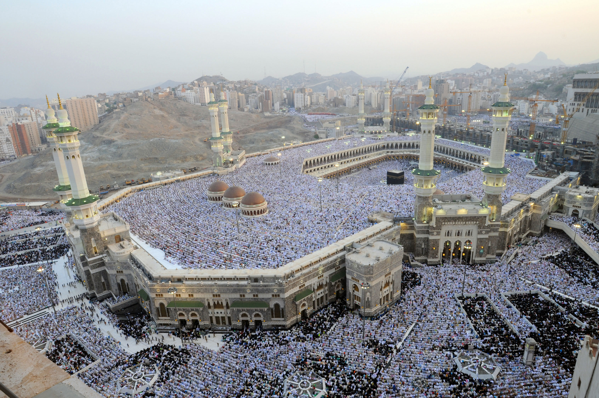
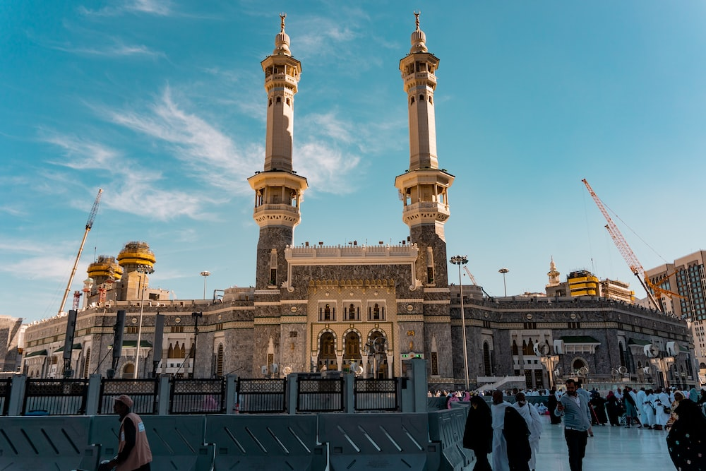
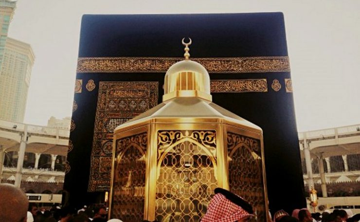
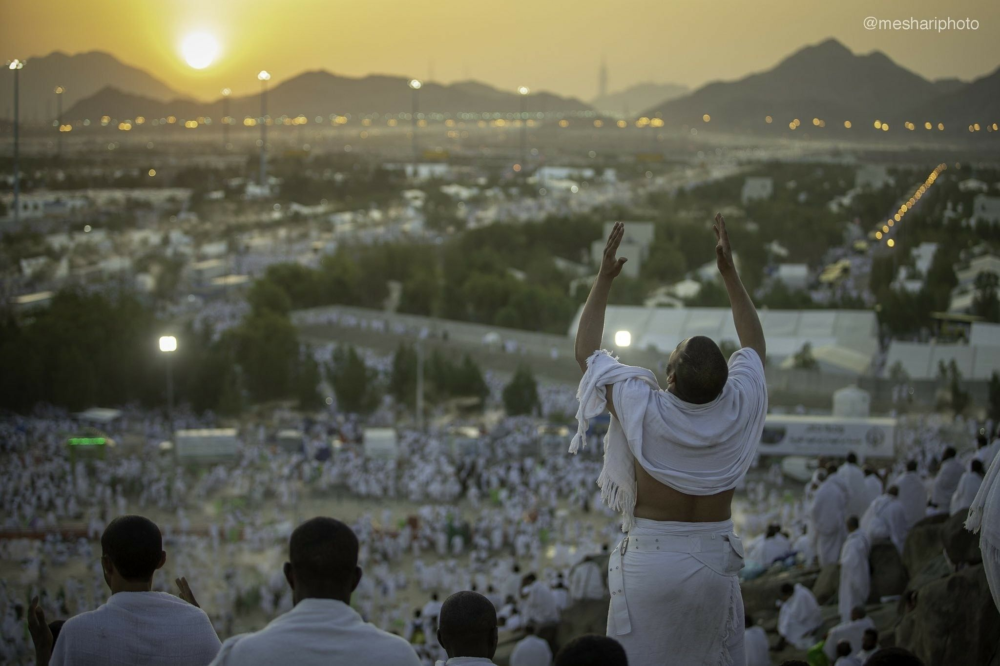

~LA~
~KAABA~

Vous souhaitez visiter la Kaaba, le lieu le plus sacré de l’islam ? Voici les règles et directives à suivre lors de cette expérience exceptionnelle :
Réservé aux musulmans : La proximité immédiate de la Kaaba est strictement réservée aux musulmans. Les non-musulmans n’y sont pas autorisés.
L’importance de l’Ihram : Avant d’entrer dans la Kaaba, les pèlerins doivent accomplir le rituel de l’Ihram. Celui-ci consiste à revêtir des vêtements blancs spéciaux (pour les hommes, deux tissus blancs sans couture) et à respecter certaines restrictions, telles que ne pas se couper les cheveux ni les ongles, ne pas utiliser de parfum et s’abstenir de relations intimes.
Le Tawaf, un acte de dévotion : Les pèlerins doivent effectuer le Tawaf, c’est-à-dire faire sept fois le tour de la Kaaba dans le sens inverse des aiguilles d’une montre. Ce rituel se pratique avec ferveur et révérence.
La Pierre Noire, une vénération recommandée : Pendant le Tawaf, il est recommandé, si possible, de toucher ou d’embrasser la Pierre Noire (Hajar al-Aswad). Si cela s’avère difficile en raison de la foule, pointer la pierre de la main droite et dire “Allahu Akbar” (Dieu est le plus grand) est également acceptable.
Une conduite exemplaire pour visiter la Kaaba : Pendant la visite, il est primordial de faire preuve d’une conduite et d’une étiquette appropriées. Les pèlerins doivent rester calmes, éviter de pousser ou de bousculer les autres visiteurs et respecter leur présence.
Prières et supplications : Il est coutumier de réciter des prières et des supplications spécifiques pendant la visite, témoignant ainsi d’une dévotion sincère et recherchant des bénédictions.
La pureté requise : Avant d’approcher la Kaaba, il est conseillé d’effectuer les ablutions (wudu) afin de se présenter avec état de pureté.
Restrictions concernant la photographie et la vidéographie : En général, la prise de photos et de vidéos à l’intérieur de la Kaaba ou à proximité immédiate est interdite.
Femmes et couverture modeste : Les femmes doivent se couvrir modestement et porter un couvre-chef (hijab) pendant la visite de la Kaaba.
Faire des dua (supplications) : Il est recommandé de faire des dua, des supplications personnelles, à proximité de la Kaaba, considérée comme un lieu sacré où les prières sont exaucées.
Il est important de noter que ces directives sont ancrées dans les pratiques traditionnelles. Toutefois, il est toujours recommandé de consulter les autorités locales ou les érudits religieux pour obtenir des instructions spécifiques ou des modifications éventuelles qui pourraient avoir été mises en place. Ainsi, vous pourrez vivre une expérience sacrée inoubliable lors de votre visite à la Kaaba à La Mecque
~AL-MASJID~
AL-HARAM ~

Al-Masjid al-Haram, également connue sous le nom de Mosquée sacrée, est un lieu emblématique situé à La Mecque, en Arabie saoudite. Voici quelques faits intéressants à son sujet:
Taille impressionnante: Al-Masjid al-Haram est la plus grande mosquée du monde, s’étendant sur 40 hectares et pouvant accueillir jusqu’à 900 000 fidèles1.
Pèlerinage essentiel: Le pèlerinage à La Mecque (le Hajj) est l’un des cinq piliers de l’islam, tout comme la profession de foi, l’aumône, le jeûne du ramadan et les cinq prières quotidiennes. Les pèlerins viennent à La Mecque toute l’année pour effectuer la Umra (pèlerinage mineur) et le Hajj (pèlerinage majeur).
La Kaaba: Al-Masjid al-Haram abrite la Kaaba, le sanctuaire le plus sacré de l’islam. La Kaaba est un grand cube noir renfermant la pierre noire. Le nom “masjid al-haram” provient du Coran et de la sourate al-Isra (Le voyage nocturne), qui mentionne le voyage du serviteur de la Mosquée sacrée à la Mosquée la plus lointaine1.
Histoire riche: La construction de la Mosquée al-Haram remonte à l’époque du prophète Mahomet. Au fil des siècles, les califes ont apporté des améliorations et des agrandissements à la mosquée. Aujourd’hui, elle est un lieu de prière, de recueillement et de connexion spirituelle pour des milliers de musulmans chaque jour1.
Si vous envisagez de visiter Al-Masjid al-Haram, vous pouvez réserver des visites en bus ou en minivan, explorer son histoire et sa culture, et même profiter de sorties nocturnes pour découvrir toute sa splendeur2. Que votre visite soit empreinte de spiritualité et de paix. 🕌🌙
~MAQAM~
~IBRAHIM ~

Maqam Ibrahim, situé à la Masjid al-Haram à La Mecque, est un lieu vénéré dans l’histoire islamique. Voici 7 choses à savoir à son sujet:
Dimensions et Empreintes Miraculeuses:
La station d’Ibrahim mesure 20 centimètres de hauteur, avec des empreintes de profondeurs de 10 et 9 centimètres, respectivement. Ces empreintes marquent de manière indélébile l’intervention divine dans l’histoire humaine, laissant une trace physique de la foi et de la détermination d’Ibrahim1.
Emplacement devant la Kaaba:
Aujourd’hui, Maqam Ibrahim est stratégiquement positionné devant l’entrée de la Kaaba, servant de point focal pour les pèlerins du monde entier qui accomplissent le Tawaf, symbolisant le lien ininterrompu entre les fidèles et leur foi1.
Une Empreinte Divine:
La tradition islamique enseigne que la pierre a conservé les empreintes d’Ibrahim par un miracle divin, soulignant la permanence de la foi à travers les générations. Ce miracle continue d’inspirer les musulmans par son témoignage tangible de la foi d’Ibrahim1.
Le Déplacement par Omar ibn Al-Khattab:
Sous le califat d’Omar ibn Al-Khattab, Maqam Ibrahim fut déplacé pour faciliter le Tawaf autour de la Kaaba. Cela illustre l’adaptation continue des pratiques religieuses pour répondre aux besoins de la communauté musulmane tout en préservant son essence1.
Un Lieu de Prière Désigné:
Le Coran appelle les fidèles à utiliser Maqam Ibrahim comme lieu de prière, renforçant son statut de site sacré. Cette directive divine souligne l’importance de la pierre comme symbole de dévotion et de continuité spirituelle1.
Origine Céleste:
Maqam Ibrahim, aux côtés de la Pierre Noire (Hajr Aswad) et de la pierre des enfants d’Israël, est dit avoir été envoyé du ciel, établissant un lien direct entre le ciel et la terre, entre Allah et Ses serviteurs1.
Protection Divine à Travers les Âges:
La préservation de Maqam Ibrahim à travers les siècles témoigne de la protection divine, affirmant la place immuable de l’Islam et de ses symboles sacrés dans le cœur des croyants1.
En somme, Maqam Ibrahim représente bien plus qu’un point physique dans la Grande Mosquée. C’est un lien vivant avec le prophète Ibrahim Alayhi Salam et son inébranlable foi en Allah. Pour les millions de fidèles qui visitent la Kaaba chaque année, Maqam Ibrahim reste un rappel poignant de la dévotion, de la persévérance et de la miséricorde divine1. 🕋🌟
~MONT~
~ARAFAT~

Le mont Arafat, également connu sous le nom de Jabal Arafat ou Jabalar-Rahmah en arabe, est une colline située à environ 20 kilomètres au sud-est de La Mecque en Arabie saoudite. Cette montagne est d’une importance historique et religieuse majeure pour les musulmans 1.
Voici quelques informations essentielles sur le mont Arafat :
Signification religieuse : Historiquement, le mont Arafat est l’endroit où le Prophète (PSL) a donné son dernier sermon, connu sous le nom de Khutba e HajjadtulWIda. C’est également le lieu où Adam et Hawa se sont retrouvés sur Terre après avoir quitté le ciel. Pendant le Hajj annuel, le rituel sacré du pèlerinage, les pèlerins quittent Mina et se rendent à la montagne Arafat. Le 9ème jour du mois de Dhu al-Hijjah est marqué comme le jour d’Arafat et est considéré comme le jour le plus important du Hajj 1.
Structure géologique : La montagne d’Arafat mesure environ 230 pieds de hauteur. La roche sur la colline est principalement de la granodiorite, une roche ignée semblable au granit. Elle est composée de feldspath, de quartz, de muscovite et d’autres minéraux 1.
Rituel du Hajj : Les pèlerins passent toute la journée sur la colline d’Arafat et tout autour d’elle pour invoquer Allah jusqu’au coucher du soleil. C’est un moment de prière, de réflexion et de repentance 2.
Si vous avez l’occasion de visiter le mont Arafat, vous serez témoin de son importance spirituelle et de sa beauté naturelle. 🕋🌄